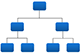

Easy CHAID Web application for creating classification trees using CHAID algorithm Hosted at GitHub! Yeah!
Easy CHAID is a free software that applies the Chi-squared Automatic Interaction Detection algorithm to classify your data into groups.
Input Data
Values separated by
1st row contains column headings
Dependent variable in column
Options
Result
About CHAID algorithm

CHAID is an algorithm for constructing classification trees that splits the observations on a data base into groups that better discriminate a given dependent variable.
Every node is split according to the variable that better
discriminates the observations on that node. The new nodes are split again and again until reaching the minimum node size (user-defined) or the remaining variables don't differentiate enough for a new split.
Independent variables must
be categorical like gender 'male' and 'female' or like marital status 'married', 'single', 'divorced' and 'widow(er)'. Numerical continuous variables like age, height, weight, or income must be transformed into categories before using them in CHAID.
Whereas original CHAID algorithm accepts numerical continuous variable as the dependent variable, this implementation of CHAID is not yet ready for that. So, for now, dependent variable must also be categorical.
This implementation
was thoroughly tested against IBM SPSS and reaches exactly the same results.
Yes. That's right. There is no licensing, no membership, no fee, nothing. But your word of gratitude or compliment would motivate the programmer to keep the site online and keep improving it.
Author
Rafael R. Troiani is an enthusiast for programming, data science, web design and other nerdy things. Msc. in Economics at Insper,
Bachelor of Business Administration at USP. Works at a commercial bank, develops software and web pages on his spare time.